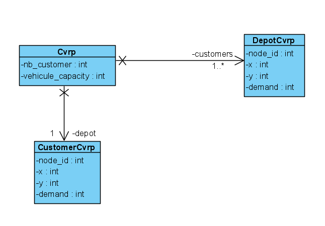

Capacitated Vehicle Routing Problem Modelization
This section is about the packages problem of the project. This package is the modelization of the Capacitated Vehicle Routing Problem Modelization in python.
Reminder about CVRP
The vehicle routing problem (VRP) is a combinatorial optimization and integer programming problem which asks “What is the optimal set of routes for a fleet of vehicles to traverse in order to deliver to a given set of customers?”. It generalises the well-known travelling salesman problem (TSP). It first appeared in a paper by George Dantzig and John Ramser in 1959, in which the first algorithmic approach was written and was applied to petrol deliveries. Often, the context is that of delivering goods located at a central depot to customers who have placed orders for such goods. The objective of the VRP is to minimize the total route cost. In 1964, Clarke and Wright improved on Dantzig and Ramser’s approach using an effective greedy approach called the savings algorithm.
Determining the optimal solution to VRP is NP-hard, so the size of problems that can be solved, optimally, using mathematical programming or combinatorial optimization may be limited. Therefore, commercial solvers tend to use heuristics due to the size and frequency of real world VRPs they need to solve.
The package
The package is composed of 3 modules: - instance: Contain the class Cvrp that enables you to create instance of the CVRP; - customer: Contain the Class CustomerCvrp that will let you create customers nodes; - depot: Contain the Class DepotCvrp that that enables you to create depot nodes;
The class of the package may be found on the following UML class diagram:
Note
The methods have not been detailled on the previous class diagram